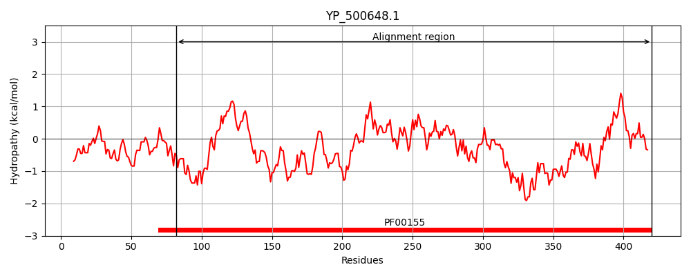
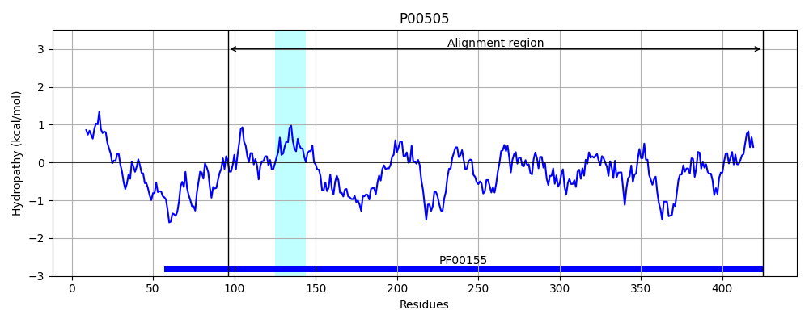
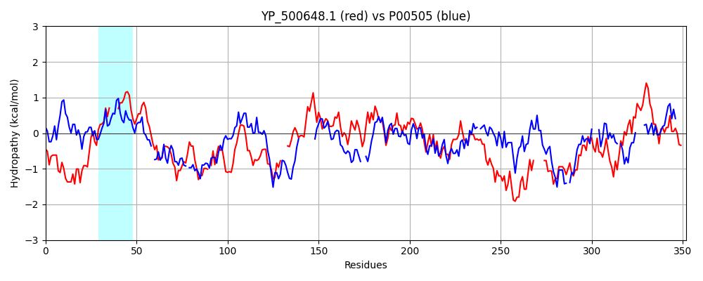

Hit Accession: P00505
Hit TCID: 9.A.70.1.1
Hit Description: gnl|BL_ORD_ID|8173 gnl|TC-DB|P00505|9.A.70.1.1 Aspartate aminotransferase, mitochondrial OS=Homo sapiens GN=GOT2 PE=1 SV=3
Mach Len: 352
e:0.000000
Query TMS Count : 0
Hit TMS Count: 1
TMS-Overlap Score: 0.000000
Predicted Substrates:CHEBI:4984;fatty acid
BLAST Alignment:
Score: 138 , Bit scores: 57 bits, E-value: 4.0e-09, Alignment length: 352, Percentage identity: 23
Query: 82 YAPPQGIEELRDLWQQKMLRDNPELSIDNMSLPIVT----NALTHGLSLVGDLFVNQGDTILLPEHNWGNYKLVFNTRNGANLQTYPIFD-KDGHYTTDSLVEALQSYNKDKVIMILNYPNNPTGYTPTH---KEVTTIVDAIKALADKGTKVIAVVDDAYYGLFYEDVYTQSLFTALSNLNSNAILPVRLDGATKEFFAWGFRVGFMTFGTSDQTTKEVLEAKVKGLIRSNISSGPLPTQSAVKHVLKNNKQFDKEIEQNIQTLKERY-----EVTKEVVYADQYHSHWQAYDFNSGYFMAIKVHDVDPEELRKHLIEKYSIGVIALNATDIRIAFSCVEKEDIPHVFDSI 420
Y P G+ E + L +N E+ + + T AL G S + F D + LP+ WGN+ +F G LQ Y +D K + VE + + V+++ +NPTG P KE+ T+V K + A D AY G D + A+ + I K +G RVG T D + +E+++K LIR S+ PL + + + N K+ Q ++ + +R ++ + H +WQ G F + PE++ + LI+++SI + D RI+ + V ++ ++ +I
Sbjct: 96 YLPIGGLAEFCKASAELALGENSEVLKSGRFVTVQTISGTGALRIGASFLQRFFKFSRD-VFLPKPTWGNHTPIFRDA-GMQLQGYRYYDPKTCGFDFTGAVEDISKIPEQSVLLLHACAHNPTGVDPRPEQWKEIATVV--------KKRNLFAFFDMAYQGFASGDGDKDAW--AVRHFIEQGINVCLCQSYAKNMGLYGERVGAFTMVCKDADEAKRVESQLKILIRPMYSNPPL-NGARIAAAILNTPDLRKQWLQEVKVMADRIIGMRTQLVSNLKKEGSTH-NWQHITDQIGMFC---FTGLKPEQVER-LIKEFSIYM----TKDGRISVAGVTSSNVGYLAHAI 425 | Protein Hydropathy Plots: |
|---|
|  |  |
Pairwise Alignment-Hydropathy Plot:
|
|---|
|  |